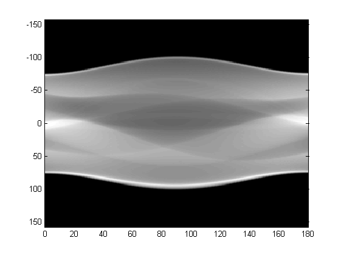
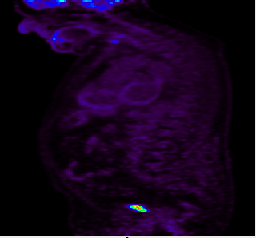

Prepare your data¶
Read and reshape¶
The size(shape) and the distribution of the data would affect both the performance and the learning speed of the network, and hence reshaping or preprocessing the raw data to the shape/distribution we want and post-processing it back to the origin format are usually common in machine learning[The reasons behind this are a lot, say we want the learning converge similar to all directions in our training data]. In most the cases, the methods include but not limit to normalization, reshaping, etc.
Learn our raw data¶
In the following, I will give two examples about the data we deal with for medical imageing, sinograms and images.
eg. Sinograms¶
PET-CT and PET-MR scanners store the raw data in proprietary formats which can be processed only by the software provided by the scanner manufacturer, where one of the raw data is sinograms, which is basically 2D representation of projection rays versus angle.
{kind=link}
In our case, we have the sinograms files for badblocks, where the file format is .s with the input sinograms being removed with bad blocks and the target sinograms being equipped with all blocks, and both files are stored around 1.4G(with flatten data stored as uint16).
Hence, our goal is to use U-Net to project the data from the input files and to make it close to the data in the target file. Actually, the best way to train might be to feed all the sinograms into memory, but these files are too large as one input for neural network. Hence, in the following, we will try to cut/seperate the data into slices where we only need to feed parts of the sinograms.
eg. Images¶
{kind=link}
To clarify, our goal is to learn the body image (to make the image more clear and help the doctors make good decisions). Thus, another potential solution will be to work on the images directly. Say, we feed the reconstructed image with bad blocks into our neural networks as inputs and our target will be the images without bad blocks.
Process our raw data¶
To advoid loading all data into the memory, we reshape our dataset into more informative matrix and partition the dataset into smaller pieces. In this way, we can let the network learn the smaller pieces but we might lose the information of connections among the smaller pieces.
In my case, I am working on sinograms and the sinograms have their own informative structure [TOF, Slice, W, L], where TOF stands Time of Flight, Slice stands the slices of the sinogram, W, L stand for the rays versus angle. After reshaping the dataset from [TOF, Slice, W, L] into [TOF*Slice, W, L], I feed the network with the sinogram based on slice. For example, for each slice, the sinogram has the shape [50, 520].
For most cases in machine learning without down/up sampling in the images, the number of W and L does not matter. Since we are working on UNet (as autoencoder, we need to encode and decode the data) we would better make W and L as a power of 2 (since we will consider the network structure as UNet which will include both downsampling and upsampling).
Note
An example of reshaping to a power of 2:
Numpy provides the padding function:
data = np.pad(data, ((x1, y1), (x2, y2), (x3, y3), (x4, y4)), 'wrap')In our case, if we have [TOF=34, Slice=815, W=50, L=520], we can do:
data = np.pad(data, ((0, 0), (0, 0), (7, 7), (0, 0)), 'wrap')to make it [TOF=34, Slice=815, W=64, L=520], which would be good enough for 3 times downsampling since W and L can be divided by \(2^3\).
Here I only list one way to change the shape, and actually there might be tons of other methods which are good to try.
Save the data in pickle¶
Pickle module implement binary protocols for serializing and de-serializing a Python object structure. Here we can dump our matrix into pickle by using:
pickle.dump(result, f, pickle.HIGHEST_PROTOCOL)
Note
Be careful with you pickle version, since it might not match between python2 and python3.
The details of the data process can be refered from sino_process_tof.py
Warning
Loading all the data into the GPU is both time consuming and inefficient.
Load your data¶
Before we start, let’s see how pytorch works with dataset. Pytorch a Python-based scientific computing package targeted at two sets of audiences:
- A replacement for NumPy to use the power of GPUs
- a deep learning research platform that provides maximum flexibility and speed
In fact, pytorch has listed very good tutorial for beginners, so I will omit this part here while you can find easily online.
Dataset Class¶
PyTorch provides many tools to make data loading easy and hopefully, to make your code more readable. For instance, the abstract class in pytorch torch.utils.data.Dataset is the main class to call for loading data, and there are mainly two methods would be called.
- __len__: which returns the size/length of the dataset
- __getitem__: which returns one sample of the dataset based on the index, such that dataset[i] for index i
In our case, we define the class class Sino_Dataset(dataset) inherits from torch.utils.data.Dataset
Here, the length of the dataset is:
def __len__(self):
return self.epoch_size
and the item of the dataset is:
def __getitem__(self, idx):
return self.data[idx]
the self.data.shape=[tof*slice, W, L]
The details of getting item also include shuffling and file updating, which can be viewed as different methods to improve the randomness of the data set.